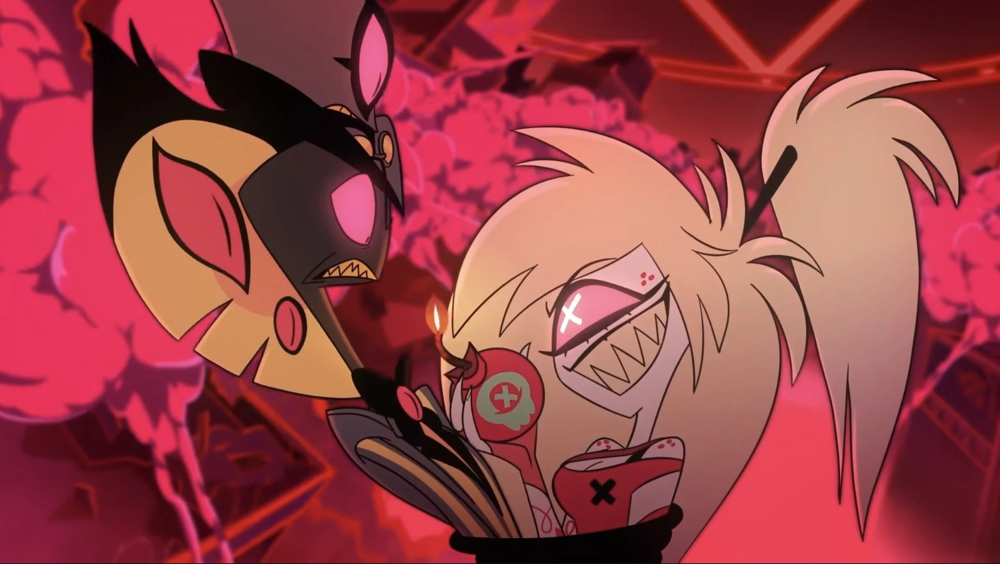
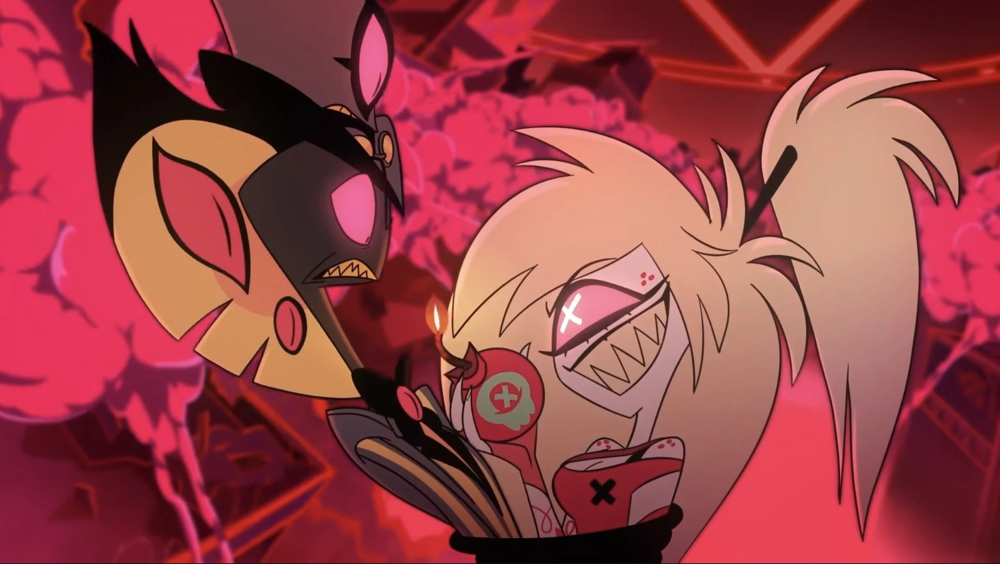

⛧ Cherri Bomb je Angelova blízká kamarádka, která ho podporuje v každé špatnosti a která většinu času příliš nevěří v účinnost Hazbin Hotelu a možnost se polepšit. Později však změní názor, po tom, co si uvědomí hlubší city vůči svému předešlému úhlavnímu nepříteli Siru Pentiousovi. Má ráda večírky, drogy a bojování.
 
